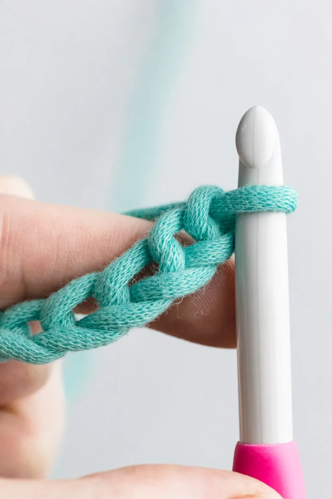
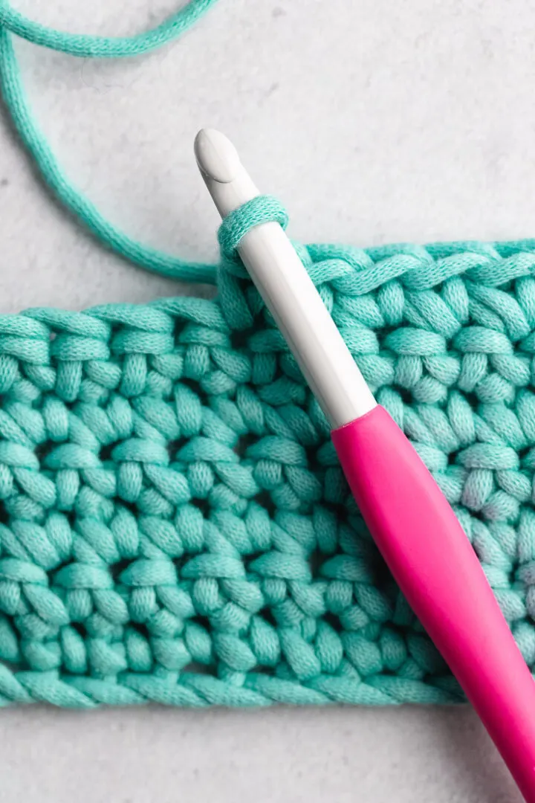
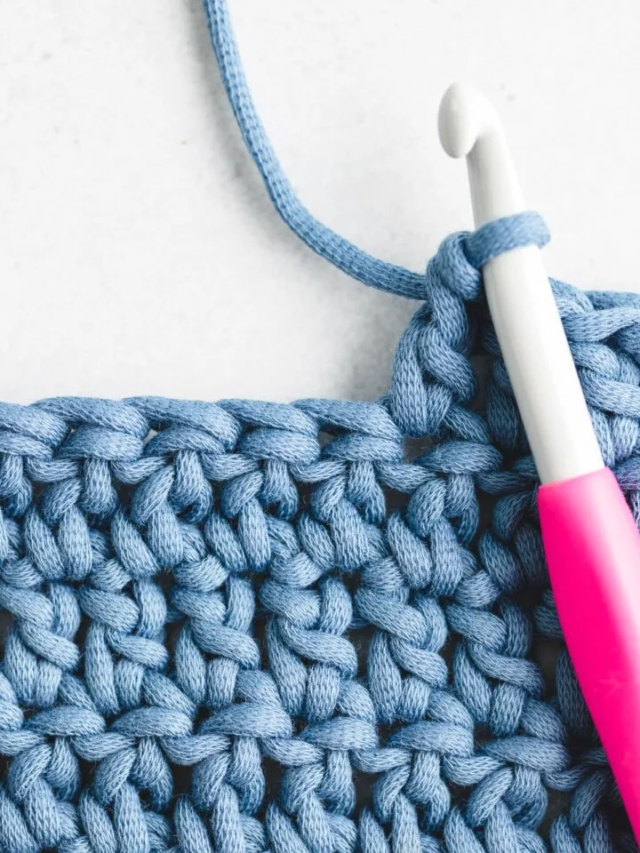
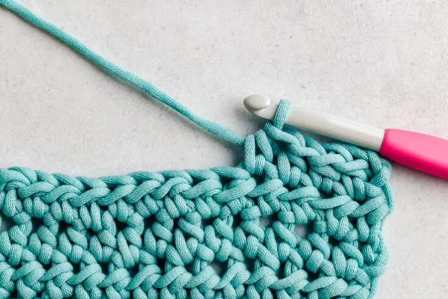

---Stitches---
Chain Stitch
A chain stitch is the most basic crochet stitch that every beginner must know.
Most patterns, if not all, start with a number of chain stitches that are then built off of with different sitiches.
- Make a slip knot, and insert your hook.
- Yarn over and pull up a new loop.
- The first chain stitch is complete.
- Repeat to make the next chain stitch and the rest of the foundation chain.
Single Crochet
Single crochet is the next easiest and most useful stitch you shuld learn.
The abbreviation for this stitch that you would see in patterns is "SC".
- You must make a chain stitch before starting to single crochet.
- Insert hook into the next stitch, yarn over your hook, and pull up a loop.
- You should have two loops on your hook now.
- Then, yarn over again and pull through both loops on the hook.
Double Crochet
Double crochet is harder to get used to, but, in my opinion, it is the quickest stitch for big projects.
The abbreviation for this stitch that you would see in patterns is "DC".
- You must make a chain stitch before starting to double crochet.
- Before inserting your hook yarn over your hook first. You should have two loops.
- Insert your hook into the next stitch, yarn over your hook, and pull up a loop.
- You should have three loops on your hook now.
- Then, yarn over again and pull through only TWO loops on the hook.
- Yarn over again and pull through the remaining two loops on your hook.
Half Double Crochet
Half double crochet isthe least used stitch out of these stitches, but is still equaly as important to know.
The abbreviation for this stitch that you would see in patterns is "HDC".
- You must make a chain stitch before starting to half double crochet.
- Before inserting your hook yarn over your hook first. You should have two loops.
- Insert your hook into the next stitch, yarn over your hook, and pull up a loop.
- You should have three loops on your hook now.
- Then, yarn over again and pull through all three loops on the hook.
Additional Sitiches
CLICK HERE for more stitch options.